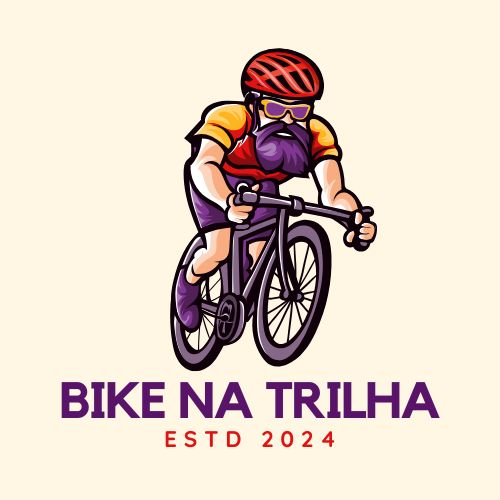

Sobre Nós
Sobre a Bike na Trilha
Bem-vindo à Bike na Trilha, sua loja online especializada em bicicletas e acessórios para ciclistas de todos os níveis.
Nossa missão é oferecer produtos de alta qualidade que atendam às necessidades dos ciclistas,
proporcionando uma experiência de compra excepcional.
A Bike na Trilha foi fundada por um grupo de entusiastas do ciclismo que queriam compartilhar sua paixão pelo esporte.
Com anos de experiência no mercado, nossa equipe entende o que é necessário para garantir uma pedalada segura e prazerosa.
Explore nossa loja online e descubra tudo o que a Bike na Trilha tem a oferecer. Seja você um ciclista iniciante ou um veterano,
estamos aqui para ajudar você a encontrar a bicicleta e os acessórios perfeitos para suas aventuras.
Espero que goste! Se precisar de mais alguma coisa, é só avisar. 🚴♂️🚴♀️